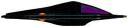
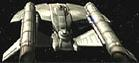
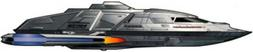

| Aeon
Nave temporale lunga 6,21 metri proveniente dal XXIX secolo comandata dal
capitano Braxton ed equipaggiata con un disgregatore subatomico. La Aeon
è stata costretta ad un atterraggio forzato sulla
Terra nel
1967, dove Henry Starling se
n'è impossessato, causando gravi contaminazioni nella sua linea temporale. |
Future's End |
L'eone è un lungo periodo di tempo. |
| USS Armstrong Danneggiata
severamente in una battaglia contro i
Klingon nel 2373. |
Apocalypse Rising |
Neil Armstrong è stato il primo uomo a mettere piede sulla Luna. |
| USS Billings
Janeway e
Tuvok hanno servito insieme su
questa nave prima di essere assegnati alla Voyager. |
Night |
Billings è una città del Montana nei pressi di Little Big Horn. |
| USS Carolina Fregata. Nel
2379, al comando del
capitano Peterson, viene inviata ad intercettare una nave
ferengi nel settore 39542.8 in
prossimità della gigante rossa 23139. |
Friday's Child,
Inside Man |
La Carolina è uno stato degli USA. |
| USS Columbia NCC-621 Scout. |
Star Trek I |
Il Columbia è stato il primo shuttle ad entrare in servizio
attivo; lo shuttle è esploso durante il rientro in atmosfera l'1.2.2003 in
un tragico incidente in cui sono morti gli astronauti Rick D. Husband,
William C. McCool, Michael P. Anderson, David M. Brown, Kalpana Chawla,
Laurel Clark e Ilan Ramon. |
| USS Cortéz Nave comandata dal
capitano Quentin Swofford appartenente alla flotta comandata da
Sisko che nel
2374 ha ripreso possesso
di Deep Space Nine. La
Cortéz è stata data per dispersa appena dopo la riconquista della
stazione. |
Favor The Bold,
Sacrifice of Angels,
Far Beyond the Stars |
Herman Cortéz è il conquistatore spagnolo che ha rovesciato l'impero
Azteco e ha consegnato il Messico alla Corona di Spagna. |
| USS Destiny Astronave comandata dal
Capitano Raymer assegnata per trasportare da
Deep Space Nine a
Trill Dax dopo la morte di
Jadzia. Il deteriorarsi delle condizione del simbionte hanno costretto il
guardiamarina Ezri Tigan a diventare il nuovo ospite di
Dax. |
Shadows and Symbols,
Afterimage |
Destiny è il nome del modulo del laboratorio scientifico
americano della Stazione Spaziale Internazionale. |
| USS Entente NCC-21249 Corazzata. |
Star Trek I |
L'Intesa (l'alleanza tra Russia, Francia e Gran Bretagna) era conosciuta come Entente. |
|
Intrepid Comandata dal Capitano
Ramirez, soccorre l'Enterprise
durante l'attacco di Duras nelle vicinanze del sistema solare nel
2153. |
The Expanse,
Twilight |
|
| USS Musashi Nel
2375 Nog ha fornito
all'equipaggio di questa nave un modulatore di induzione in cambio di un
emettitore phaser. |
Treachery, Faith, and the Great River |
La Musashi era una corazzata giapponese che ha combattuto nella
Seconda Guerra Mondiale ed è stata affondata il 25 ottobre 1944 nel Mare di
Sibuyan durante la Battaglia del Golfo di Leyte. Le due navi gemelle
Yamato e Musashi furono le due più potenti corazzate di tutto il
conflitto. |
| SS Odin Nave mercantile. Nel
2357 viene danneggiata nello scontro con un asteroide. Alcuni
membri dell'equipaggio si mettono in salvo nelle capsule di
salvataggio e atterrano su Angel
One, il pianeta più
vicino al luogo dell'incidente; le capsule raggiungono il pianeta in circa
5 mesi, 6 giorni, 11 ore, 2 minuti e 57 secondi. |
Angel One |
Odino è una divinità nordica. |
| USS Olympia Comandata dal capitano
Lisa Cusak, era stata assegnata ad una missione esplorativa di otto anni del
quadrante Beta dal 2363 al
2371. Di ritorno nel
territorio federale, ha investigato un pianeta del settore rutariano, ma
l'energia dei sensori ha scatenato una reazione quantica nel campo di
energia exogenica che circonda il pianeta distruggendo la nave e uccidendo
tutti i membri dell'equipaggio. |
The Sound of Her Voice |
Olimpia è la città greca del Peloponneso in cui nell'antichità si
svolgevano i Giochi Olimpici. |
| USS Revere NCC-595 Scout. |
Star Trek I |
Paul Revere (1735-1818) era un patriota americano: scrittore, uomo
politico, orafo, ecc., corse ad avvertire i Minuteman dell'arrivo delle
Giubbe Rosse. |
| USS Sarek Nave appartenente alla
flotta comandata da Sisko che nel
2374 ha ripreso possesso
di Deep Space Nine. |
Favor the Bold |
Sarek è il
padre di Spock. |
| USS Sentinel Nog ha scambiato con
l'equipaggio di questa nave un emettitore phaser in cambio di uno
stabilizzatore di gravitoni. |
Treachery, Faith, and the Great River |
|
| USS Shiku Maru Comandata dal Capitano
Silvestri. Una delle sette navi che tentarono di comunicare con i
Tamariani nel secolo precedente al
contatto del 2368 con l'Enterprise.
|
Darmok |
|
| USS Ticonderoga Nel
2375 ha aiutato
Ba'ku a diventare un protettorato della
Federazione. |
Insurrection |
Il Forte Ticonderoga è stato conquistato il 10 maggio 1775 da Ethan
Allen. |
| USS Tombaugh Comandata dal capitano
Blackwood assimilata dai Borg nel
2362. |
Infinite Regress |
Clyde Tombaugh è l'astronomo che ha scoperto Plutone. |
| USS Valiant NCC-1223 Distrutta
presso Eminiar
VII nel
2217. |
A Taste of Armageddon |
La Valiant è una corazzata inglese della Seconda Guerra Mondiale. |
| USS Veracruz Ha dato il cambio alle
truppe federali sull'avamposto AR-558 durante la guerra contro il
Dominio. |
The Siege of AR-558 |
Il distretto di Veracruz è uno degli Stati Uniti Messicani. |
| SS Woden Fregata. |
The Ultimate Computer |
Woden significa Odino, una divinità nordica. Woden è anche una città
dell'Iowa. |
| USS Yorktown Comandata dal capitano
Joel Randolph. Nel 2286
viene disabilitata da una sonda aliena diretta verso la
Terra. |
Star Trek IV |
Il nome del capitano è riportato solamente sulla sceneggiatura.
In una delle prime stesure del profilo della
Serie Classica
Gene Roddenberry
aveva scritto che la storia si sarebbe svolta a bordo della USS Yorktown. |
| 3 [Senza Nome] Caccia a corto raggio, distrutti all'esterno del
perimetro di difesa di Marte. |
The Best of Both Worlds - Part II |
|
| 5 [Senza Nome] Squadrone Nova. |
The First Duty |
|
|
Yacht
del Capitano dell'Enterprise E lungo
33,5 metri. |
|
|
 [Senza
Nome] Nave olografica. Non ha gondole warp, ma è capace di muoversi a
velocità di curvatura. È essenzialmente una nave che ospita un vasto
holodeck. [Senza
Nome] Nave olografica. Non ha gondole warp, ma è capace di muoversi a
velocità di curvatura. È essenzialmente una nave che ospita un vasto
holodeck. |
Insurrection |
|